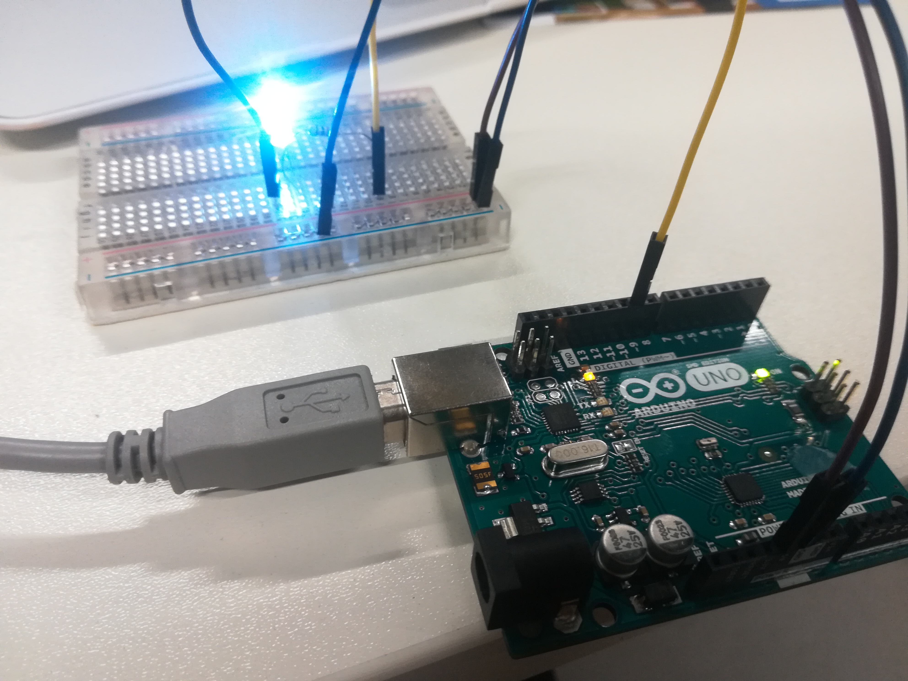
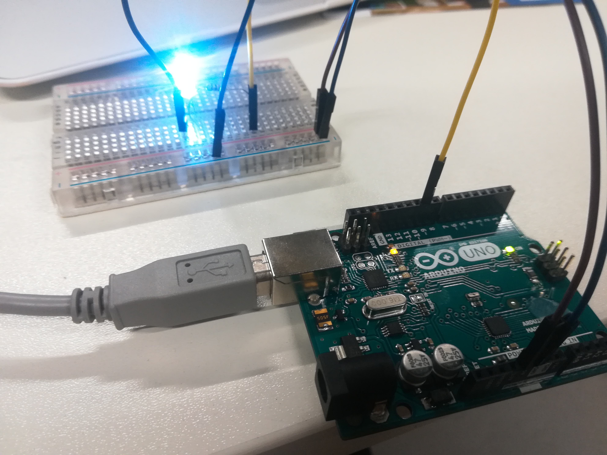
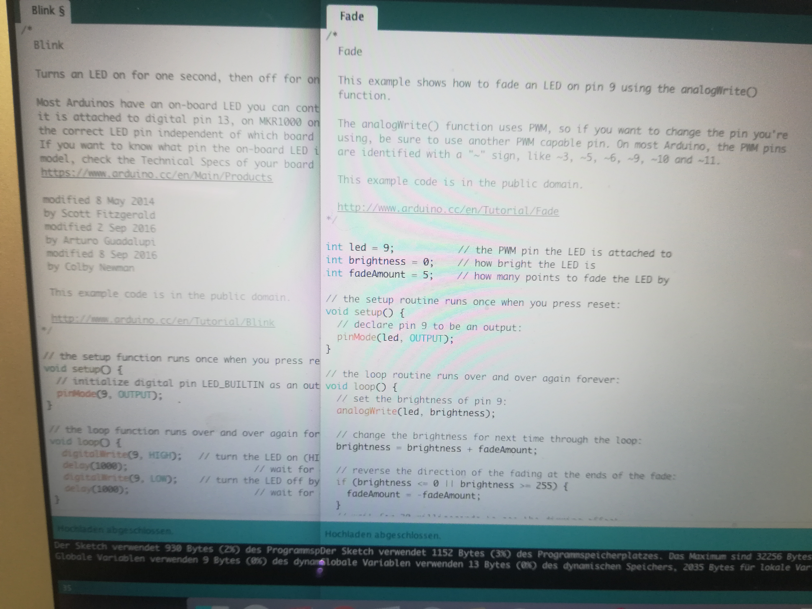
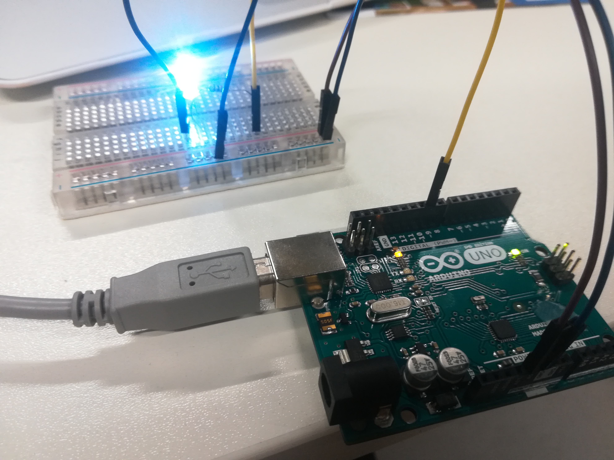

Arduino is a program which enables programming of electrical circuits. In our case we connected wires on a arduino so that the LED lamp blinks. The way of lighting was adjustable by using the fade mode instead of blink. This shows the first picture. We selected 1000 as delay for our otput so that the lamp blinked more slow down.


My initial idea is to build a kind of extension for people whom hands are too short so for example they can not reach the keyboard at the working place. Or are too small as the average so are not able to reach ceratin things and have in this sense difficulties at work. Whereas the working places are often build for people without these impairments.